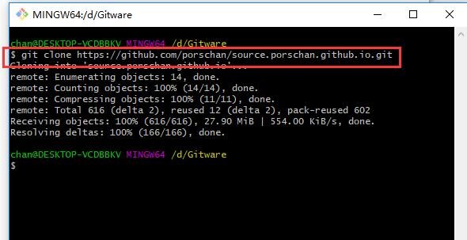

title: github下载并搭建hexo环境
date: 2018/11/11 23:51:01
desc: chanchfieng.com
$ node -v
$ hexo -v
$ git --version

$ git clone https://github.com/porschan/source.porschan.github.io.git
官方的推荐的使用如下：
我遇到的报错如下：
切换npm为cnpm:
$ npm install -g cnpm --registry=https://registry.npm.taobao.org
$ cnpm install vue-cli -g
$ cnpm install
$ npm install hexo-asset-image --save
$ hexo generate
$ hexo server
浏览器输入localhost:400